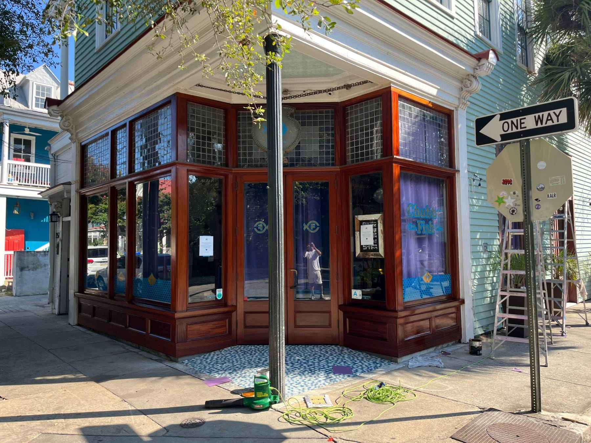

Exterior Paintingin Charleston, SC
Restoration or remodel, done with the proper steps and the highest quality exterior paints, so your house stands the test of time.
Outside your home
Built to stand the test of time.
Exterior projects come in many forms, and here at Koozer Painting, we can do them all. Whether it’s a restoration project in Charleston or a remodel in Mount Pleasant, we will take the proper steps to make sure that your home looks great, and that the job is done right.
Many painters skip steps and use inadequate materials, which leads to poor longevity. We only use the highest quality exterior paints so that your house will stand the test of time.
Restoration or remodel
Exterior projects come in many forms, and we can do them all, from restoration projects in Charleston to remodels in Mount Pleasant.
The proper steps, every time
We take the proper steps to make sure your home looks great and the job is done right, instead of skipping steps the way many painters do.
Quality exterior paints
We only use the highest quality exterior paints, so your house will stand the test of time.
Our exterior work
Recent exteriors
Select any photo to enlarge it.
What clients say
Painting these structures requires a craftsman that is conscientious and careful to protect and preserve the historic finishes of these significant buildings. I know that I can count on Koozer Painting to meet the high standards we require for Charleston’s important architectural treasures.
Glenn F. Keyes, FAIAArchitect
Free estimates
Ready to see your space in a new color?
Tell us about your project and we’ll follow up with a free estimate. Whether it’s a single room or a whole house, we’d be glad to take a look.